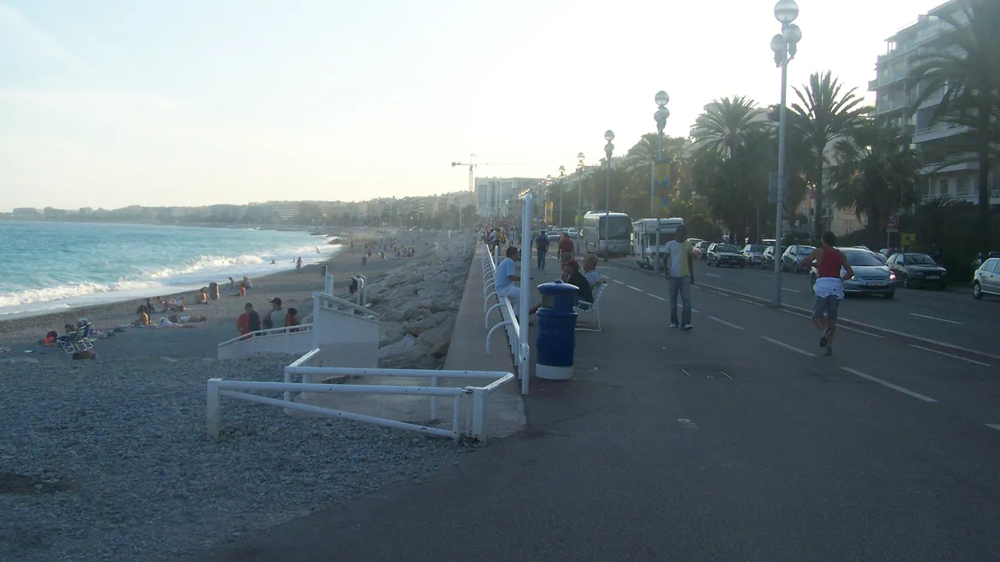
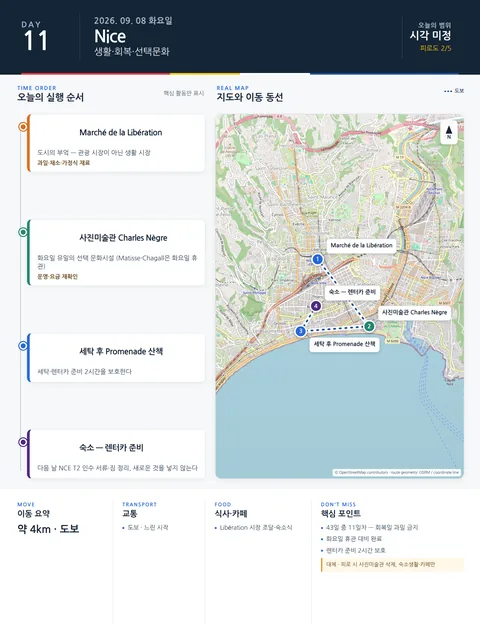

Day 11 · 9/8 화 · Nice

- 핵심 실행
- 회복·시장·사진미술관 선택
- 권장 출발
- 느린 시작
- 완충
- 세탁·렌터카 준비 2시간 보호
시간표
| 시간 | 일정 | 실행 포인트 |
|---|---|---|
| 07:30–08:15 | Jason 선택 러닝 또는 늦잠 | 다리 피로가 있으면 완전휴식 |
| 09:20–10:30 | Marché de la Libération | 실제 장보기·9/9 차량간식 준비 |
| 10:45–12:30 | Musée de la Photographie Charles Nègre 선택 | 화요일 10:00–18:00 운영. 피로하면 생략 |
| 12:45–13:30 | 가벼운 점심 | 시장재료 또는 숙소권 점심 |
| 13:30–15:30 | 숙소 휴식·세탁 | 체크아웃·렌터카 서류·짐 재분류 |
| 15:30–17:30 | 선택 모듈 | Promenade 카페, 해변산책, Julia 수영 중 1개 |
| 17:30–18:30 | 9/9 준비 | 물·간식·면허·예약번호·주유/보험 확인 |
| 19:30–21:00 | Nice 마지막 저녁 | 과식하지 않고 이동일 전 음주 최소화 |
피로도
2/5
이 날의 장소
일자별 시간표와 본문 표기에서 찾은 것이다. 하루의 전부가 아니라 장소 카드가 있는 것만 담는다.
이 날의 메모
Nice 생활·회복일: 시장, 사진미술관 선택, 세탁과 해변
추가된 1박의 목적은 장소를 더 쌓는 것이 아니라 당일치기 이틀 뒤 피로를 회수하고 Nice에서 실제 생활하는 것이다.
사진미술관은 선택이며 생활블록을 우선한다. Matisse·Chagall은 화요일 휴관이고, Èze·Villefranche 추가도 금지한다.
상세 실행 확인
- 최고 리스크
- 화요일 휴관·회복일 과밀화
- 우선 삭제
- 사진미술관·추가마을
- 대체안
- 숙소생활·카페
- 식사·휴식
- Libération 시장·숙소식
- 잠금 필요
- 사진미술관·렌터카 준비
Google 실행지도
Libération 시장과 사진미술관 — 니스 마지막 날
지도 펼치기
지도는 펼칠 때만 불러옵니다.
Daily Action Map

실제 좌표와 OpenStreetMap을 사용한 실행용 요약입니다. 도로·대중교통 상황은 출발 직전에 다시 확인하세요.